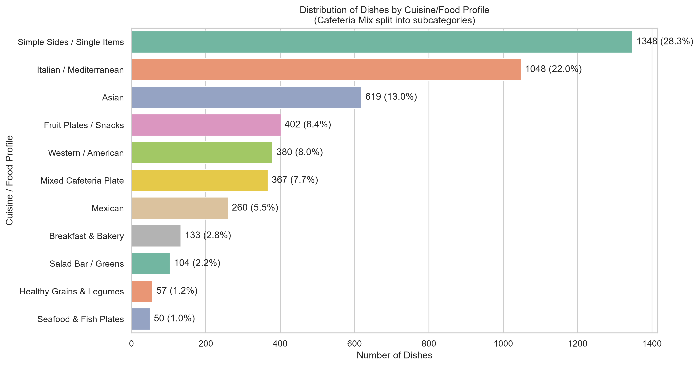
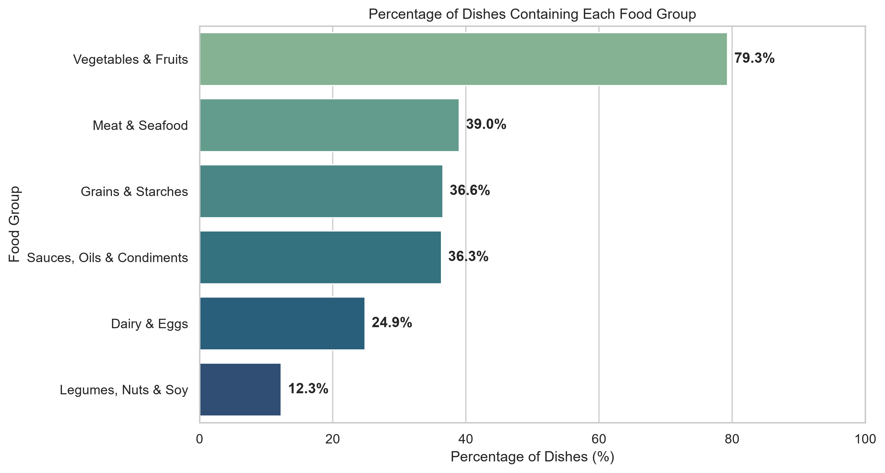
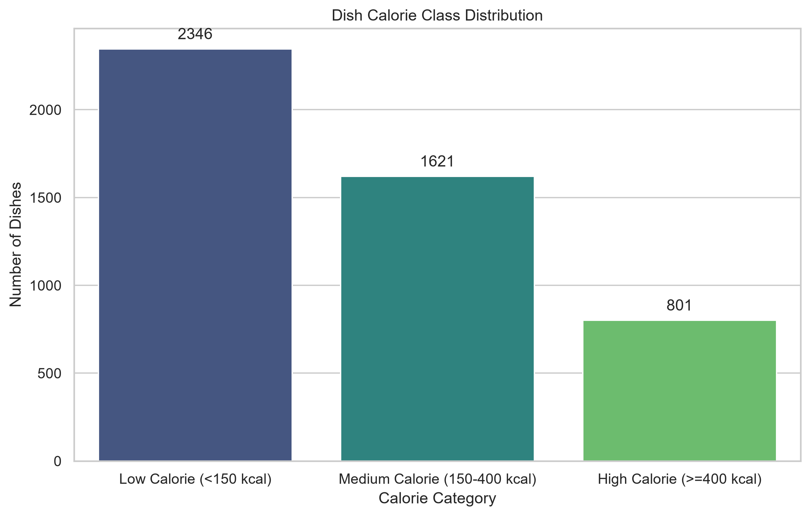

Project Overview
Why this problem matters
Calorie tracking is time-consuming. Food photos are easy to capture, but calories are difficult to estimate from appearance alone because portion size, hidden ingredients, oils, sauces, and macros affect nutrition.
Research question
To what extent can a CNN classify food images into Low, Medium, and High calorie ranges?
Dataset
Dataset details
- Created by Google Research and published at CVPR 2021.
- Includes food images and nutrition labels such as calories, mass, fat, carbohydrates, and protein.
- Our cleaned dataset used 3,244 matched overhead RGB images.
- Calories were grouped into Low, Medium, and High classes.
Dataset preview



Model Approach
Pipeline
- Algorithm: CNN-based supervised computer vision model
- Input: RGB food image
- Output: Low, Medium, or High calorie range
Model evolution
- Basic CNN: about 66% validation accuracy
- Higher-resolution CNN: larger image input for more visual detail
- Ordinal multi-task CNN: about 73% validation accuracy
- Streamlit app: deployment prototype
Results
Matched overhead RGB images in the cleaned dataset.
Dish-level overlap across train, validation, and test splits.
Improvement across the model iterations.
Demo
What the app does
The Streamlit app lets users upload a food image and receive a Low, Medium, or High calorie range prediction. The app also includes photo guidelines, prediction details, visual explanation, and experimental nutrition breakdowns.
Demo placeholder
Limitations & Bias
Known limitations
- Food photos may hide oils, sauces, ingredients, or exact portion size.
- Nutrition5k may not fully represent all cuisines, home-cooked meals, or real-world phone photos.
- Medium-calorie meals are harder because they can look similar to both Low and High meals.
Bias mitigation
- Clean train/validation/test split.
- 0 dish overlap across splits.
- Documented failure cases.
Impact
More accessible nutrition awareness
Image-based estimation makes nutrition awareness easier to approach in everyday settings.
Less manual input
Users can get a rough idea of a meal without manually entering ingredients.
Connecting vision and nutrition
The project shows how computer vision can connect everyday food images with nutrition information.
Next Steps
Technical extensions
- Add multimodal inputs such as side-view images or depth information.
- Use pretrained depth models like MiDaS or Depth Anything to estimate depth maps.
- Improve Medium-class performance.
Broader testing
- Test more real-world food photos with different lighting, angles, cuisines, and backgrounds.
- Compare results across image conditions and meal types.